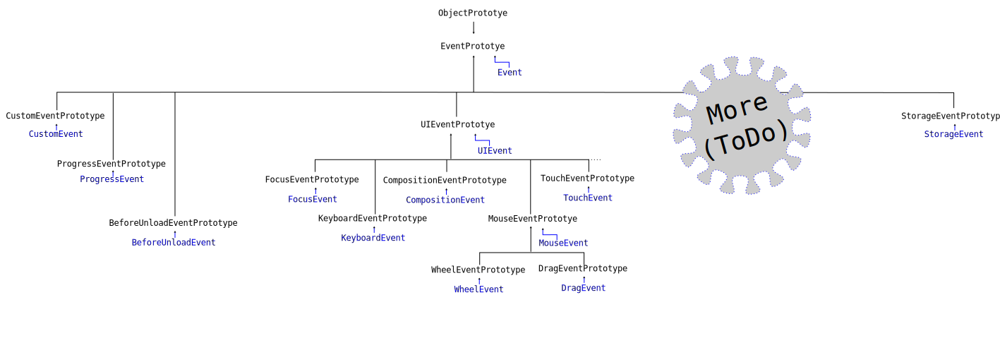

This overview of events and event handling explains the code design pattern used to react to incidents which occur in the time of a web page is kept open and summarizes the types of such incidents handled by modern web browsers.
Events and event handling provide a core technique in Javascript for reactivity to incidents which occur during the time a web page is kept open by a user, including incidents which occur while a page is being prepared for display, incidents due to user interaction with the content of the web page, incidents related to the device on which the browser is running, or incidents due to many other causes such as media stream playback or animation timing.
Events and event handling became central to Javascript programming with the initial introduction of the language, which accompanied a switch in the rendering architecture of browsers from single pass page rendering to event driven, reflow based, page rendering. Initially, browsers would wait until getting all of the parts of a page to parse, process, draw, and present the page to the user. The browsers would then stay unchanged until a new page was requested and fetched. With the change to an event driven, reflow based, page rendering, browsers would repeatedly loop between processing, drawing, presenting content, and waiting for some new event trigger to start the loop again. Event triggers include the completion of the loading of a resource on the network (e.g. an image has been downloaded and can now be drawn on the screen), the completion of parsing a resource by the browser (e.g. the HTML page has been processed), the interaction of a user with the contents of the page (e.g. a button has been clicked). Douglas Crockford explains this change effectively in several lectures, notably his talk entitled An Inconvenient API: The Theory of the DOM which shows the change in flow from the original flow
to the event driven browser. The latter approach changed the last steps from a single flow into a perpetual loop, where painting is followed by waiting for and handling the incidence of new events. The innovation of the latter approach allowed for a page to be partially rendered even when resources had not yet been obtained; the approach also allowed for event driven actions, which was leveraged by Javascript. (The talk is available from several sources, including this one). Currently, all execution environments for Javascript code use events and event handling.
The event design pattern
The event system, at its core, is simply a programming design pattern. The pattern starts with an agreement over a kind of event and:
- the name String used for the event,
- the type of the data structure used to represent the key properties of that event, and
- the Javascript object which will 'emit' that event.
The pattern is implemented by
- defining a Javascript function which takes as an argument the data structure which was agreed upon, and
- registering the function using the name String with the object which will emit the event.
The function is said to be a 'listener' or a 'handler' with both names used interchangibly. This pattern can easily be followed using completely custom code, as explained in the article on custom events. The pattern is also used by modern web browsers which define many events emitted in response to user input or browser activity.
Modern web browsers follow the event pattern using a standardized approach. Browsers use as the data structure for the properties of the event, an object derived from the EventPrototype object. Browsers use as the registration method for the function which will handle those data structures a method called addEventListener which expects as arguments a string event type name and the handler function. Finally, browsers define a large number of objects as event emitters and define a wide variety of event types generated by the objects.
Button Event Handler Demo
For example, browser button elements are intended to emit events named 'click' in response to a mouse click or, when displyed in touch senstive surfaces, to a finger tap. We could define in the HTML page a button as:
<button id="buttonOne">Click here to emit a 'click' event</button>
and, in our Javascript code, we could first define a function to listen to that 'click' event:
var example_click_handler = function (ev){
var objKind = (ev instanceof Event) ? "EventPrototype" : "ObjectPrototype";
alert("We got a click event at " + ev.timeStamp + " with an argument object derived from: " + objKind );
};
and second register our function with the the Button object, either on the scripting side using the DOM (Document Object Model) representation of the HTML page:
var buttonDOMElement = document.querySelector('#buttonOne');
buttonDOMElement.addEventListener('click', example_click_handler);
or within the HTML page by adding the function as the value of the 'onclick' attribute, although this second approach is usually only used in very simple web pages.
This code relies on the agreement that there is a kind of event called 'click' which will call any listener (or 'handler') function with an Event object argument (actually, in this case a derivative MouseEvent object) and which will be fired by HTML button elements after user interaction. The code has no visible effect until a user interacts with the button either by placing the mouse pointer over the HTML button and clicking on the left mouse button or by placing a finger or stylus of some kind on the screen above the HTML button; when that happens, the buttonDOMElement Javascript object would call the example_click_handler function with an Event object as an argument. The function, in turn, would perform whatever action was chosen by the programmer, in this case to open an HTML alert dialog. Note that the handler has access to the ev object since it is passed as an argument; the object has information about the event, notably the time at which the event occurred.
As a second example, much modern Javascript integrated into web pages is wrapped into an event function call to ensure that the code is only executed when the HTML has been processed and is available for alteration or decoration. For example, code might be attached as:
var funcInit = function(){
// user code goes here and can safetly address all the HTML elements from the page
// since the document has successfully been 'loaded'
}
document.addEventListener('DOMContentLoaded', funcInit);
so that this code will only be executed after the document object emits the 'DOMContentLoaded' event because the HTML has been parsed and Javasript objects created representing each of the nodes of the HTML document. Note that in this example, the code does not even name the event argument to the function because the code never needs to use the data structure describing the event; rather, the code merely needs to wait to run until after then event has happened.
The pattern is therefore easy to learn and implement. The difficulty with events comes from learning the wide variety of events which are generated in modern web browsers. There is also some subtlety in learning how to write the handler functions since such code works asynchronously and potentially will run repeatedly but in slightly different situations.
Notable events
Web browsers define a large number of events so it is not practical to list them all. The Event Reference attempts to maintain a list of the standard Events used in modern web browsers.
In general, we can distinguish events of different kinds based on the object emitting the event including:
- the
windowobject, such as due to resizing the browser, - the
window.screenobject, such as due to changes in device orientation, - the
documentobject, including the loading, modification, user interaction, and unloading of the page, - the objects in the DOM (document object model) tree including user interactions or modifications,
- the
XMLHttpRequestobjects used for network requests, and - the media objects such as
audioandvideo, when the media stream players change state.
although this list is currently incomplete.
Some notable events are:
Note: This list of will need work to make relevant; that work is awaiting some global reorganization work on the documents. This will also need finding a good explanation of the events involved during page loading, such as discussed partially in this web page or in this Stack Overflow question.
- the global object
windowemits an event called'load'when the page has finished rendering, meaning that all resources have been downloaded and acted upon, so that the scripts have been run and the images displayed, - the global object
windowemits an event called'resize'when the height or the width of the browser window is changed by a user, - the DOM object
documentrepresenting the HTML document emits an event called'DOMContentLoaded'when the document has finished loading, - the DOM node objects such as
divorbuttonemit an event called'click'when the user presses the mouse button while the mouse pointer is on top of the DOM node in the HTML page.
The Event object hierarchy
The web browser defines many events of different kinds. Each definition includes, as the data structure passed to the handler function, an object which inherits from the EventPrototype object.
A partial diagram of the class hierarchy of event objects is:
Note: This diagram is incomplete.

The Web API Documentation contains a page defining the Event object which also includes the known DOM event subclasses of the Event object.
Documents
Three sources on the MDN (Mozilla Developer Network) web site are particularly useful for programmers wanting to work with events:
- this Event Guide which is part of the Web Developers' Guide,
- the Event Reference,
- the Web API documentation for the
Eventobject.
{kind=link}